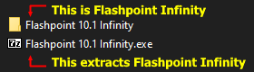

Choosing a version
There are two editions of the Flashpoint archive on the download page:
- Flashpoint Ultimate - This is the full archive in one monstrous package. It will not fit on most people's computers, so this is probably not what you want unless you're an archivist or someone with a lot of time and hard drive space at your disposal.
- Flashpoint Infinity - This lets you view the entire archive on an on-demand basis; entries will only be downloaded to your computer if you play them. This is the smallest and quickest way to experience the Flashpoint archive. You need an internet connection to download entries.
Extracting Flashpoint

Flashpoint is portable, which means it cannot be installed or uninstalled through traditional methods. The entire program can instead exist in a folder on your desktop or in your Downloads folder. As such, it only needs to be extracted from a container file to work.
- If you downloaded Flashpoint Ultimate, you can extract the contents of the .7z file using the 7-Zip file manager. While alternatives such as WinRAR also support extracting the contents of .7z files, they are problematic with Ultimate's large file size and may not extract properly. To avoid problems during extraction, stick to using 7-Zip.
- If you downloaded Flashpoint Infinity, you can simply open the .exe file to extract Flashpoint. It will first ask you to choose the directory you want to extract Flashpoint to; by default, this is the folder containing the .exe file. Once the extraction is completed, the window will close and a Flashpoint Infinity folder will be created in the specified directory. If you cannot find it in File Explorer, it may have appeared at the bottom of the file view. Otherwise, try right-clicking in an empty space in the file view and selecting "Refresh".
Running Flashpoint
Flashpoint can be opened by double-clicking the shortcut titled "Start Flashpoint" inside the Flashpoint folder.
If no window appears, read the section of the Troubleshooting page titled "The Flashpoint window isn't appearing when I run it".